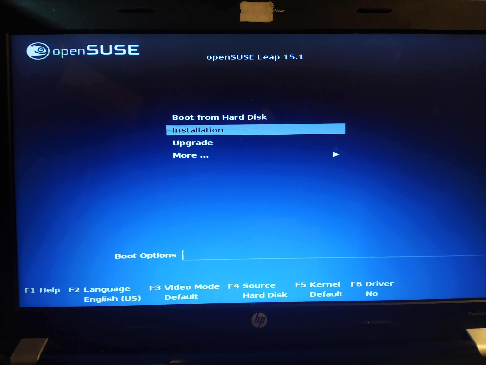
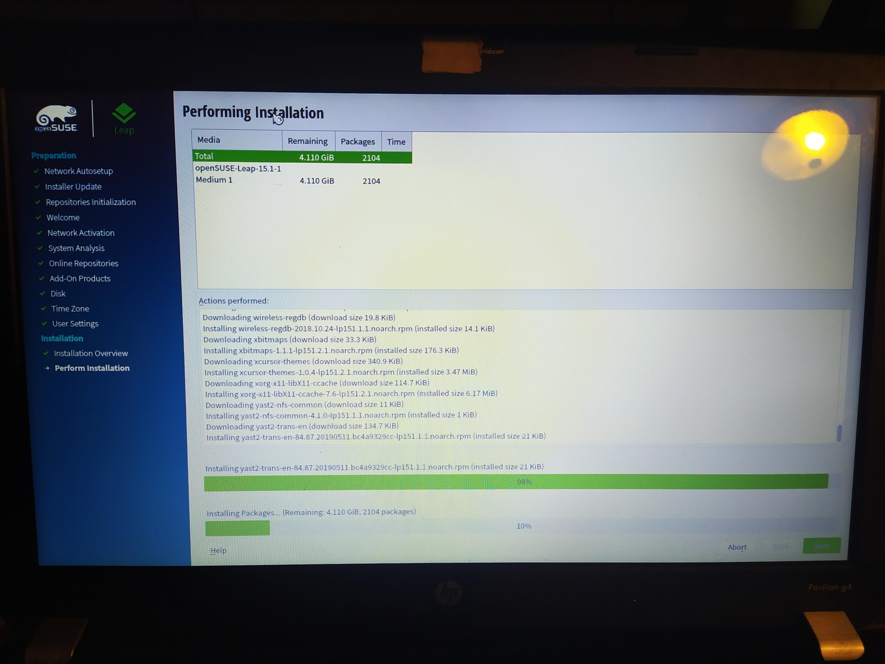
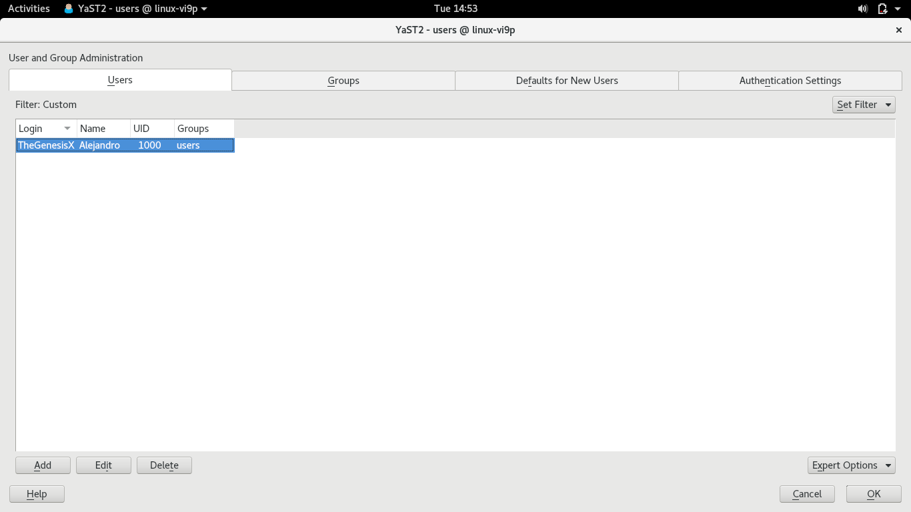
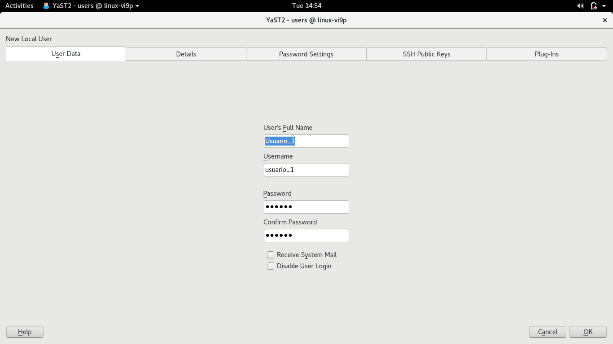
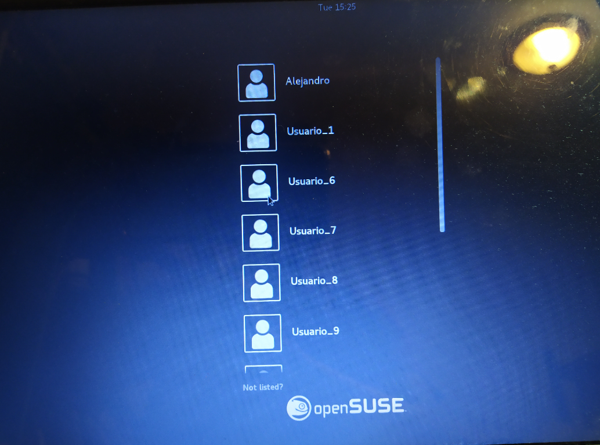
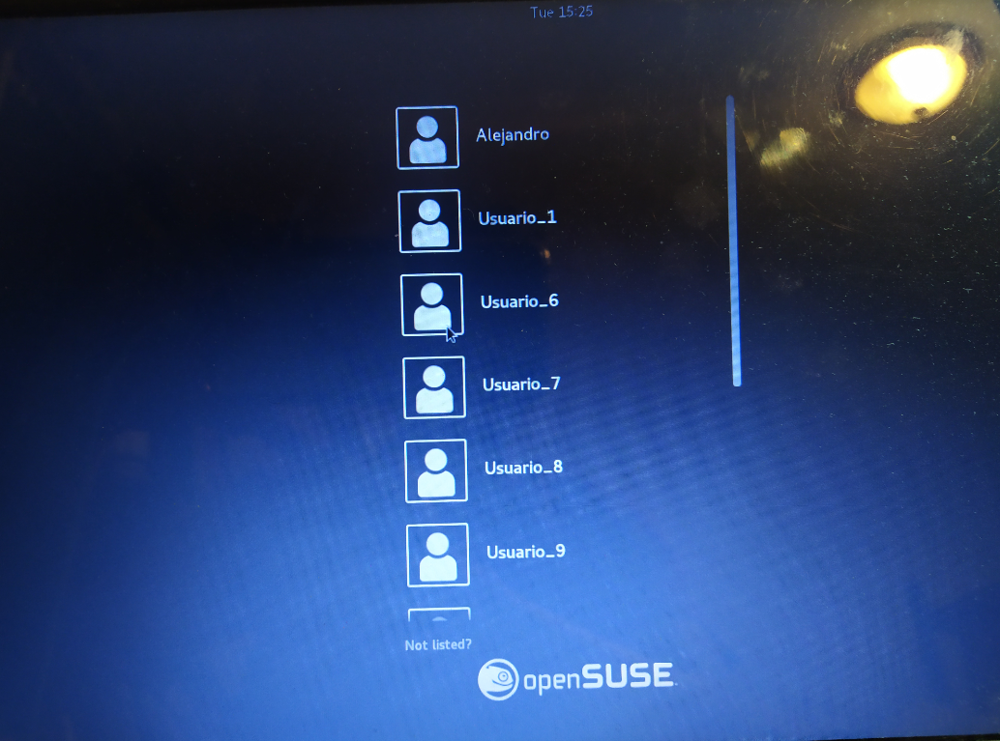
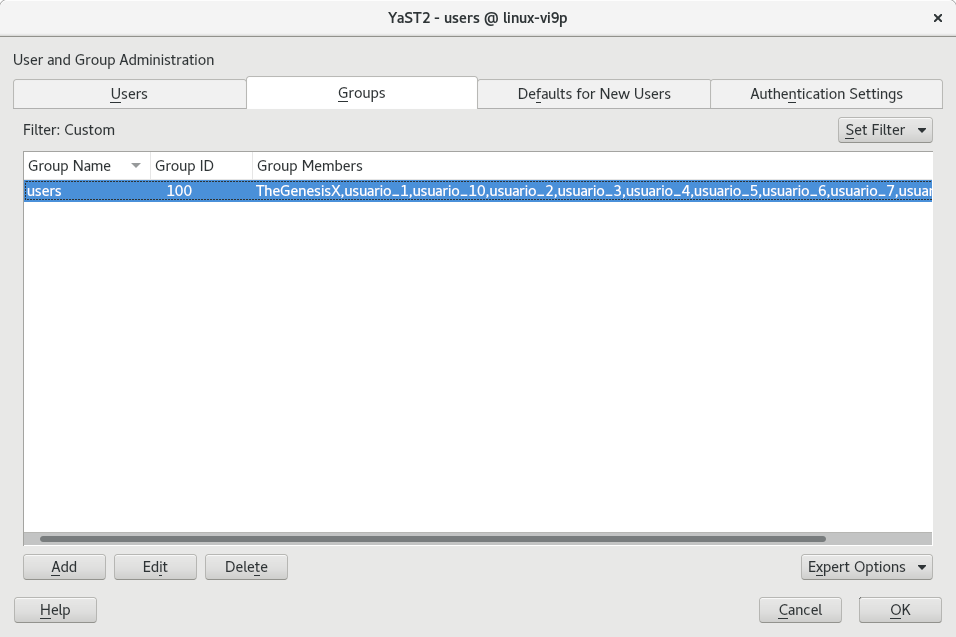
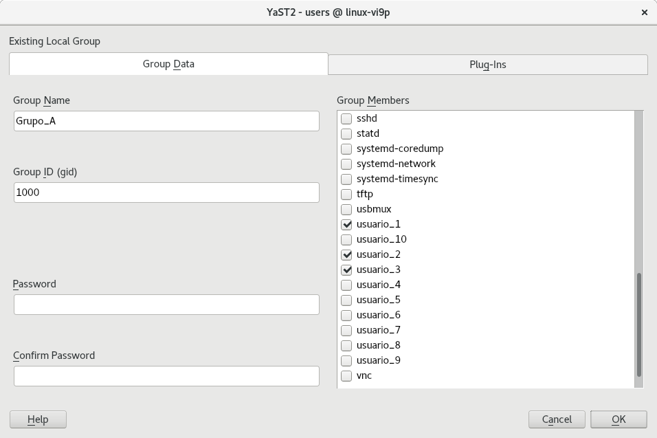
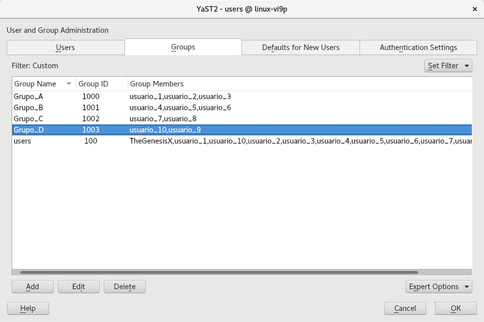

Instrucciones
- Instalar linux server y configurar 10 usuarios y 4 grupos de usuarios.
Requerimientos
- Conexión a internet para poder descargar el ISO de nuestra distribución.
Comencemos
- En este caso para la implementación de un servidor Linux utilizaremos OpenSUSE, por el hecho de experimentar con una nueva distribución. Para ello será necesario entrar a su página oficial y descargar la versión LEAP, que es la más estable.
- Una vez descargado el ISO, lo montaremos en una USB como lo hemos hecho ya anteriormente.
- Ahora procederemos a instalar la distribución en nuestra máquina. Iniciaremos la computadora con la USB y seleccionaremos la opción de instalación.
- Comenzaremos con las configuraciones básicas.
- La parte de la gestión de particiones es importante, ya que tenemos más Sistemas Operativos y Particiones generadas, así que un error en este paso podría significar un severo problema. Para evitar problemas nos aseguramos de entrar a la parte avanzada de Particiones y verificamos que no se modifiquen sistemas o particiones innecesariamente. En este caso seleccionremos la reducción o eliminación de los Sistemas Windows en caso de ser necesario, la eliminación de sistemas Linux en caso de ser necesario (sí se perdió Ubuntu, así que hay que tomar esto en consideración), y para las particiones le indiqué que no las tocara, porque en caso de una mala modificación, podríamos perder el acceso incluso a todos nuestros sistemas operativos instalados.
- Ahora configuraremos a nuestro usuario base.
- Y finalmente iniciaremos con la instalación del Sistema Operativo. Puede tomar hasta 30 minutos aproximadamente.
- Ahora nos dirigiremos a crear 10 nuevos usuarios. Para esto abriremos la herramienta YAST, y nos dirigiremos a
Seguridad y Usuario
>>Administración de Usuario y Grupo.
- Aquí podremos ver los usuarios ya creados (actualmente solo el de base), así como datos del mismo, e información de grupos.
- Lo primero que haremos será dar clic en el botón
Añadir
y configuraremos un nuevo usuario. Así hasta completar los 10 requeridos. - Ahora pasaremos a la pestaña de Grupos. Lo primero que veremos será el Grupo Usuarios, en donde estarán todos los usuarios creados anteriormente, incluido el de base.
- Daremos clic en Añadir y crearemos 4 grupos. Y de paso aprovecharemos para agregar algunos usuarios a cada uno. Esto lo necesitaremos para la práctica siguiente.
- Una vez terminado todo, se verá de la siguiente manera, con los usuarios correspondientes en cada grupo:
- Con esto habremos terminado la práctica.












Referencias Bibliográficas
- Como Gestionar Usuarios, Grupos y Permisos en Linux. (2016, Mayo 22). Consultado en Abril 21, 2020, de https://computernewage.com/2016/05/22/gestionar-usuarios-y-permisos-en-linux/
- The Complete Guide to “useradd” Command in Linux – 15 Practical Examples. (2014, Marzo 28). Consultado en Abril 21, 2020, de https://www.tecmint.com/add-users-in-linux/
- 3 Managing Users with YaST. Consultado en Abril 21, 2020, de https://doc.opensuse.org/documentation/leap/archive/42.2/startup/html/book.opensuse.startup/cha.y2.userman.html#sec.y2.userman.main
- Users and groups (Español). Consultado en Abril 21, 2020, de https://wiki.archlinux.org/index.php/Users_and_groups_(Español)